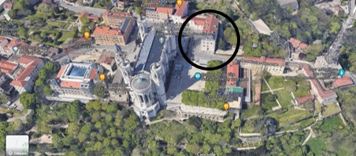

Communauté Chrétienne de l'ECAM
Lundi midi : RDV en salle M 109 !
7 Novembre : Histoire de la foi à Lyon, avec Mme CLEAU de la pastorale des Lazaristes.
14 Novembre : Report de l'intervention du Père Raquet à cause de la réunion en A&M 3.
21 Novembre : Présentation de la fête du Christ-roi et de la période de l'avent par Simon, séminariste nous accompagant depuis le début de l'année.
28 Novembre : Les Petits Frères de L'agneau reviennent parmis nous !
Site des Petits Frères
5 Décembre : On accueillera le Père Matthieu Thouvenot, ingénieur ECAM et Vicaire général (bras droit de l'évêque)
12 Décembre : Ecologie et rapport à la foi, avec le Père Michel RAQUET, Enseignant-chercheur à l’UCLy et délégué épiscopal pour l’écologie intégrale.
9 Janvier : Lien entre foi et maladie.
16 janvier : On accueillera le Père Pierre de Martin, Docteur en théologie et en histoire des religions, il nous parlera de son domaine : l'exégèse biblique
Autres activités :
Samedi 10 Décembre à partir de 15 h : une après-midi chez les Petits Frères pour les aider à nettoyer la cour de leur lieu d'habitation :
Voici le lien pour s'incrire :
Inscription
Si vous êtes intéressés par une retraite pour le nouvel an ou par une veillée pour l'avent :
Comment se rendre à la salle M109 ?
